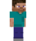
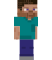
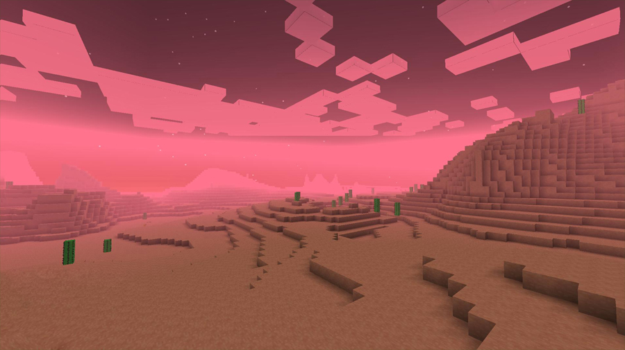
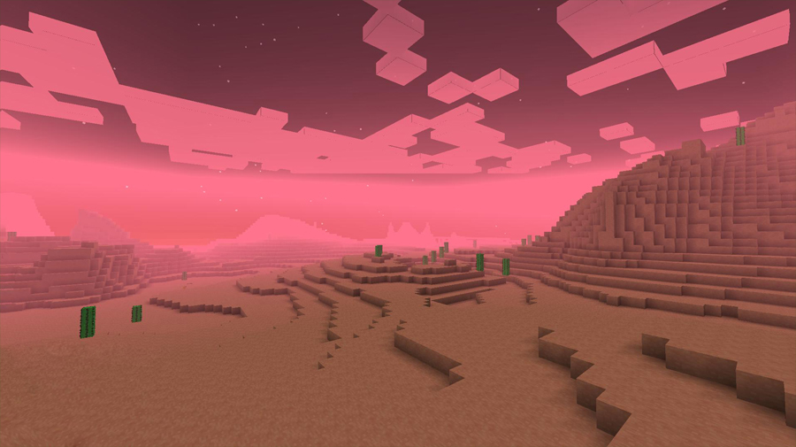

Diamant et Crépitements
Par un beau jour de printemps, Steve décida de prendre son courage (ou plutôt sa pioche) a deux mains et de pénétrer dans l’antre d’une caverne pour enfin trouver le saint graal : du diamant !
Il s’aventura dans les profondeurs ténébreuses de la terre et bientôt ses pas le menèrent devant un gisement de diamant tel que jamais Minecraftien n’avait vu. Le jeune homme éprouva une joie immense, si grande qu’il croyait ne jamais s’en remettre. Après une éternité Steve se ressaisit et commença à miner activement. Ses bras s’affairait avec énergie et en quelques heures il avait récolté plus d’une centaine de diamant.
Son attention était entièrement tournée vers son travail qu’il en oublia presque de rester sur ses gardes. C’est ainsi qu’il ne vit pas la forme d’un vert émeraude s’approcher, sortant de l’ombre. Il compris le danger qu’il encourait en entendant le crépitement caractéristique du creeper. Abandonnant son trésor il pris ses jambes a son coup, poursuivit par la créature.
Aide Steve à échapper au Creeper !
 



 
